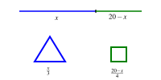
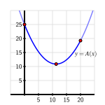

What are the differences between finding relative extreme values and global extreme values of a function?
How is the process of finding the global maximum or minimum of a function over the function's entire domain different from determining the global maximum or minimum on a restricted domain?
For a function that is guaranteed to have both a global maximum and global minimum on a closed, bounded interval, what are the possible points at which these extreme values occur?
We have seen that we can use the first derivative of a function to determine where the function is increasing or decreasing, and the second derivative to know where the function is concave up or concave down. This information helps us determine the overall shape and behavior of the graph, as well as whether the function has relative extrema.
Remember the difference between a relative maximum and a global maximum: there is a relative maximum of \(f\) at \(x = p\) if \(f(p) \ge f(x)\) for all \(x\)near\(p\text{,}\) while there is a global maximum at \(p\) if \(f(p) \ge f(x)\) for all\(x\) in the domain of \(f\text{.}\)
For instance, in Figure 3.3.1, we see a function \(f\) that has a global maximum at \(x = c\) and a relative maximum at \(x = a\text{,}\) since \(f(c)\) is greater than \(f(x)\) for every value of \(x\text{,}\) while \(f(a)\) is only greater than the value of \(f(x)\) for \(x\) near \(a\text{.}\) Since the function appears to decrease without bound, \(f\) has no global minimum, though clearly \(f\) has a relative minimum at \(x = b\text{.}\)
Figure3.3.1.A function \(f\) with a global maximum, but no global minimum.
Our emphasis in this section is on finding the global extreme values of a function (if they exist), either over its entire domain or on some restricted portion.
Preview Activity3.3.1.
Let \(f(x) = 2 + \frac{3}{1+(x+1)^2}\text{.}\)
Determine all of the critical numbers of \(f\text{.}\)
Construct a first derivative sign chart for \(f\) and thus determine all intervals on which \(f\) is increasing or decreasing.
Does \(f\) have a global maximum? If so, why, and what is its value and where is the maximum attained? If not, explain why.
Determine \(\lim_{x \to \infty} f(x)\) and \(\lim_{x \to -\infty} f(x)\text{.}\)
Explain why \(f(x) \gt 2\) for every value of \(x\text{.}\)
Does \(f\) have a global minimum? If so, why, and what is its value and where is the minimum attained? If not, explain why.
Subsection3.3.1Global Optimization
In Figure 3.3.1 and Preview Activity 3.3.1, we were interested in finding the global minimum and global maximum for \(f\) on its entire domain. At other times, we might focus on some restriction of the domain.
For example, rather than considering \(f(x) = 2 + \frac{3}{1+(x+1)^2}\) for every value of \(x\text{,}\) perhaps instead we are only interested in those \(x\) for which \(0 \le x \le 4\text{,}\) and we would like to know which values of \(x\) in the interval \([0,4]\) produce the largest possible and smallest possible values of \(f\text{.}\) We are accustomed to critical numbers playing a key role in determining the location of extreme values of a function; now, by restricting the domain to an interval, it makes sense that the endpoints of the interval will also be important to consider, as we see in the following activity. When limiting ourselves to a particular interval, we will often refer to the absolute maximum or minimum value, rather than the global maximum or minimum.
Activity3.3.2.
Let \(g(x) = \frac{1}{3}x^3 - 2x + 2\text{.}\)
Find all critical numbers of \(g\) that lie in the interval \(-2 \le x \le 3\text{.}\)
Use a graphing utility to construct the graph of \(g\) on the interval \(-2 \le x \le 3\text{.}\)
From the graph, determine the \(x\)-values at which the absolute minimum and absolute maximum of \(g\) occur on the interval \([-2,3]\text{.}\)
How do your answers change if we instead consider the interval \(-2 \le x \le 2\text{?}\)
What if we instead consider the interval \(-2 \le x \le 1\text{?}\)
On the graph, look for the lowest and highest possible values of the function.
Ask yourself the same questions as (a)-(c), simply using the new interval.
In Activity 3.3.2, we saw how the absolute maximum and absolute minimum of a function on a closed, bounded interval \([a,b]\text{,}\) depend not only on the critical numbers of the function, but also on the values of \(a\) and \(b\text{.}\) These observations demonstrate several important facts that hold more generally. First, we state an important result called the Extreme Value Theorem.
The Extreme Value Theorem.
If \(f\) is a continuous function on a closed interval \([a,b]\text{,}\) then \(f\) attains both an absolute minimum and absolute maximum on \([a,b]\text{.}\) That is, for some value \(x_m\) such that \(a \le x_m \le b\text{,}\) it follows that \(f(x_m) \le f(x)\) for all \(x\) in \([a,b]\text{.}\) Similarly, there is a value \(x_M\) in \([a,b]\) such that \(f(x_M) \ge f(x)\) for all \(x\) in \([a,b]\text{.}\) Letting \(m = f(x_m)\) and \(M = f(x_M)\text{,}\) it follows that \(m \le f(x) \le M\) for all \(x\) in \([a,b]\text{.}\)
The Extreme Value Theorem tells us that on any closed interval \([a,b]\text{,}\) a continuous function has to achieve both an absolute minimum and an absolute maximum. The theorem does not tell us where these extreme values occur, but rather only that they must exist. As we saw in Activity 3.3.2, the only possible locations for relative extremes are at the endpoints of the interval or at a critical number.
Note3.3.2.
Thus, we have the following approach to finding the absolute maximum and minimum of a continuous function \(f\) on the interval \([a,b]\text{:}\)
find all critical numbers of \(f\) that lie in the interval;
evaluate the function \(f\) at each critical number in the interval and at each endpoint of the interval;
from among those function values, the smallest is the absolute minimum of \(f\) on the interval, while the largest is the absolute maximum.
Activity3.3.3.
Find the exact absolute maximum and minimum of each function on the stated interval.
After computing \(h'(x)\text{,}\) factor to write the derivative as a product.
The sine and cosine functions have the same value at \(\frac{\pi}{4} \pm k\pi\) for any integer \(k\text{.}\)
Upon finding \(q'(x)\text{,}\) factor its numerator.
Remember that \(e^{-(x-2)^2}\) is never zero.
After differentiating, remove a factor of \(e^{-ax}\text{.}\)
Compare part (d).
The interval we choose has nearly the same influence on extreme values as the function under consideration. Consider, for instance, the function pictured in Figure 3.3.3.
Figure3.3.3.A function \(g\) considered on three different intervals.
In sequence, from left to right, the interval under consideration is changed from \([-2,3]\) to \([-2,2]\) to \([-2,1]\text{.}\)
On the interval \([-2,3]\text{,}\) there are two critical numbers, with the absolute minimum at one critical number and the absolute maximum at the right endpoint.
On the interval \([-2,2]\text{,}\) both critical numbers are in the interval, with the absolute minimum and maximum at the two critical numbers.
On the interval \([-2,1]\text{,}\) just one critical number lies in the interval, with the absolute maximum at one critical number and the absolute minimum at one endpoint.
Remember to consider only the critical numbers that lie within the interval.
Subsection3.3.2Moving toward applications
We conclude this section with an example of an applied optimization problem. It highlights the role that a closed, bounded domain can play in finding absolute extrema.
Example3.3.4.
A 20 cm piece of wire is cut into two pieces. One piece is used to form a square and the other to form an equilateral triangle. How should the wire be cut to maximize the total area enclosed by the square and triangle? to minimize the area?
We begin by sketching a picture that illustrates the situation. The variable in the problem is where we decide to cut the wire. We thus label the cut point at a distance \(x\) from one end of the wire, and note that the remaining portion of the wire then has length \(20-x\)
As shown in Figure 3.3.5, we see that the \(x\) cm of wire that is used to form the equilateral triangle with three sides of length \(\frac{x}{3}\text{.}\) For the remaining \(20-x\) cm of wire, the square that results will have each side of length \(\frac{20-x}{4}\text{.}\)

Figure3.3.5.A 20 cm piece of wire cut into two pieces, one of which forms an equilateral triangle, the other which yields a square.
At this point, we note that there are obvious restrictions on \(x\text{:}\) in particular, \(0 \le x \le 20\text{.}\) In the extreme cases, all of the wire is being used to make just one figure. For instance, if \(x = 0\text{,}\) then all 20 cm of wire are used to make a square that is \(5 \times 5\text{.}\)
Now, our overall goal is to find the minimum and maximum areas that can be enclosed. Because the height of an equilateral triangle is \(\sqrt{3}\) times half the length of the base, the area of the triangle is
When we set \(A'(x) = 0\text{,}\) we find that \(x = \frac{180}{4\sqrt{3}+9} \approx 11.3007\) is the only critical number of \(A\) in the interval \([0,20]\text{.}\)
Evaluating \(A\) at the critical number and endpoints, we see that
Thus, the absolute minimum occurs when \(x \approx 11.3007\) and results in the minimum area of approximately \(10.8741\) square centimeters. The absolute maximum occurs when we invest all of the wire in the square (and none in the triangle), resulting in 25 square centimeters of area. These results are confirmed by a plot of \(y = A(x)\) on the interval \([0,20]\text{,}\) as shown in Figure 3.3.6.

Figure3.3.6.A plot of the area function from Example 3.3.4.
Activity3.3.4.
A piece of cardboard that is \(10 \times 15\) (each measured in inches) is being made into a box without a top. To do so, squares are cut from each corner of the box and the remaining sides are folded up. If the box needs to be at least 1 inch deep and no more than 3 inches deep, what is the maximum possible volume of the box? what is the minimum volume? Justify your answers using calculus.
Draw a labeled diagram that shows the given information. What variable should we introduce to represent the choice we make in creating the box? Label the diagram appropriately with the variable, and write a sentence to state what the variable represents.
Determine a formula for the function \(V\) (that depends on the variable in (a)) that tells us the volume of the box.
What is the domain of the function \(V\text{?}\) That is, what values of \(x\) make sense for input? Are there additional restrictions provided in the problem?
Determine all critical numbers of the function \(V\text{.}\)
Evaluate \(V\) at each of the endpoints of the domain and at any critical numbers that lie in the domain.
What is the maximum possible volume of the box? the minimum?
Consider letting the length of one side of the removed squares be represented by \(x\text{.}\)
Remember that the volume of a box is length × width × height.
Read the given information carefully and think about the picture.
Note that since \(V\) is a cubic function, \(V'\) is quadratic.
Which critical numbers satisfy \(1 \le x \le 3\text{?}\)
Evaluate the function at appropriate points.
Example 3.3.4 and Activity 3.3.4 illustrate standard steps that we undertake in almost every applied optimization problem: we draw a picture to demonstrate the situation, introduce one or more variables to represent quantities that are changing, find a function that models the quantity to be optimized, and then decide on an appropriate domain for that function. Once that is done, we are in the familiar situation of finding the absolute minimum and maximum of a function over a particular domain, so we apply the calculus ideas that we have been studying to this point in Chapter 3.
Subsection3.3.3Summary
To find relative extreme values of a function, we use a first derivative sign chart and classify all of the function's critical numbers. If instead we are interested in absolute extreme values, we first decide whether we are considering the entire domain of the function or a particular interval.
In the case of finding global extremes over the function's entire domain, we again use a first or second derivative sign chart. If we are working to find absolute extremes on a restricted interval, then we first identify all critical numbers of the function that lie in the interval.
For a continuous function on a closed, bounded interval, the only possible points at which absolute extreme values occur are the critical numbers and the endpoints. Thus, we simply evaluate the function at each endpoint and each critical number in the interval, and compare the results to decide which is largest (the absolute maximum) and which is smallest (the absolute minimum).
Exercises3.3.4Exercises
1.
Based on the given information about each function, decide whether the function has global maximum, a global minimum, neither, both, or that it is not possible to say without more information. Assume that each function is twice differentiable and defined for all real numbers, unless noted otherwise. In each case, write one sentence to explain your conclusion.
\(f\) is a function such that \(f''(x) \lt 0\) for every \(x\text{.}\)
\(g\) is a function with two critical numbers \(a\) and \(b\) (where \(a \lt b\)), and \(g'(x) \lt 0\) for \(x \lt a\text{,}\)\(g'(x) \lt 0\) for \(a \lt x \lt b\text{,}\) and \(g'(x) \gt 0\) for \(x \gt b\text{.}\)
\(h\) is a function with two critical numbers \(a\) and \(b\) (where \(a \lt b\)), and \(h'(x) \lt 0\) for \(x \lt a\text{,}\)\(h'(x) \gt 0\) for \(a \lt x \lt b\text{,}\) and \(h'(x) \lt 0\) for \(x \gt b\text{.}\) In addition, \(\lim_{x \to \infty} h(x) = 0\) and \(\lim_{x \to -\infty} h(x) = 0\text{.}\)
\(p\) is a function differentiable everywhere except at \(x = a\) and \(p''(x) \gt 0\) for \(x \lt a\) and \(p''(x) \lt 0\) for \(x \gt a\text{.}\)
2.
For each family of functions that depends on one or more parameters, determine the function's absolute maximum and absolute minimum on the given interval.
For each of the functions described below (each continuous on \([a,b]\)), state the location of the function's absolute maximum and absolute minimum on the interval \([a,b]\text{,}\) or say there is not enough information provided to make a conclusion. Assume that any critical numbers mentioned in the problem statement represent all of the critical numbers the function has in \([a,b]\text{.}\) In each case, write one sentence to explain your answer.
\(f'(x) \le 0\) for all \(x\) in \([a,b]\)
\(g\) has a critical number at \(c\) such that \(a \lt c\lt b\) and \(g'(x) \gt 0\) for \(x \lt c\) and \(g'(x) \lt 0\) for \(x \gt c\)
\(h(a) = h(b)\) and \(h''(x) \lt 0\) for all \(x\) in \([a,b]\)
\(p(a) \gt 0\text{,}\)\(p(b) \lt 0\text{,}\) and for the critical number \(c\) such that \(a \lt c \lt b\text{,}\)\(p'(x) \lt 0\) for \(x \lt c\) and \(p'(x) \gt 0\) for \(x \gt c\)
4.
Let \(s(t) = 3\sin(2(t-\frac{\pi}{6})) + 5\text{.}\) Find the exact absolute maximum and minimum of \(s\) on the provided intervals by testing the endpoints and finding and evaluating all relevant critical numbers of \(s\text{.}\)